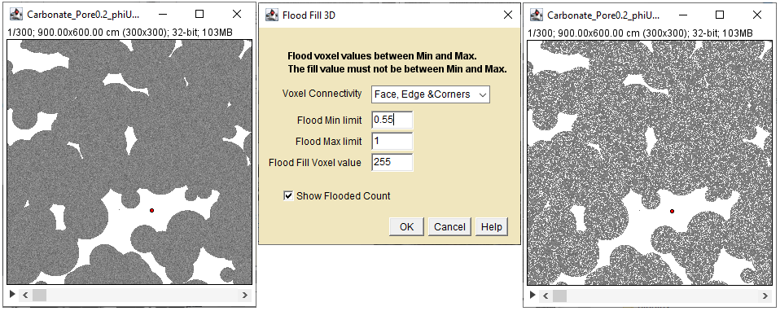
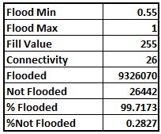

This plugin performs a 3D flood of connected voxels within a selected range of values.

Left: Stack with resolved pores(1=white), unresolved pores(0<gray<1), and red point flood origin Center: Flood 3D Dialog Right: Flooded voxels including unresolved pores with greater than 0.55 porosity.
FloodFill 3D operates on 8-bit gray, 16-Bit and 32-Bit stacks.
Before using the plugin, use the point, multi-point or freeline tool to select the flood origin.
In the plugin dialog select the desired connectivity.
Edit the pre-populated Flood Min and Flood Max values to the range you want to flood.
Enter the value to mark the flooded voxels, it should not be between Flood Min and Flood Max and be a valid number for the image bit depth.
Check the Show Flood Count button to report the number of voxels flooded.

Flood Fill 3D Results.
There are lots of flood fillers, this one is not special. I include it because the brushfire code in DistanceMapLib is so simple. A modified version powers the Geodesic Transform.